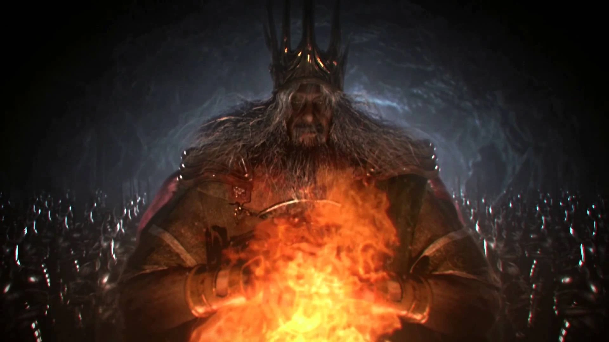
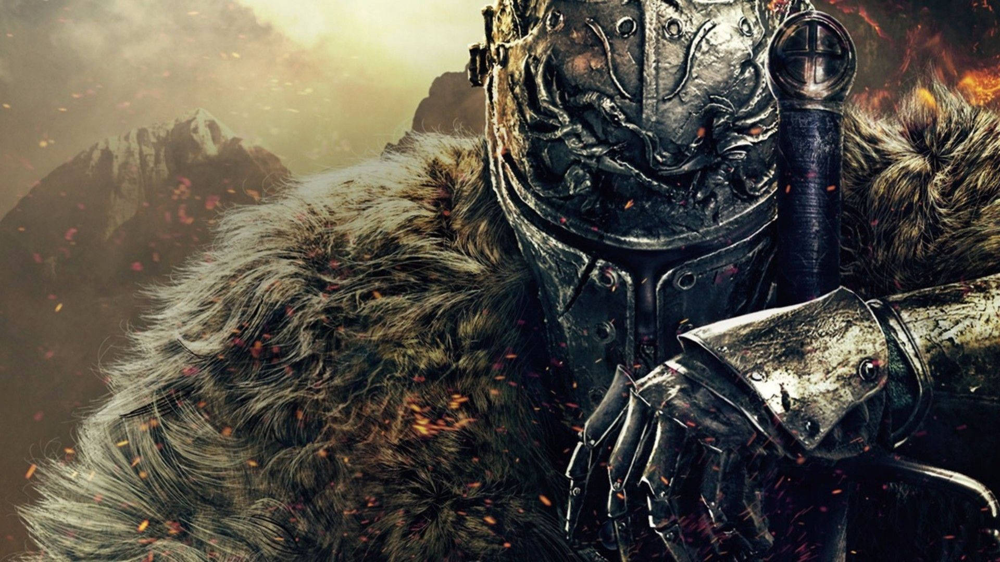
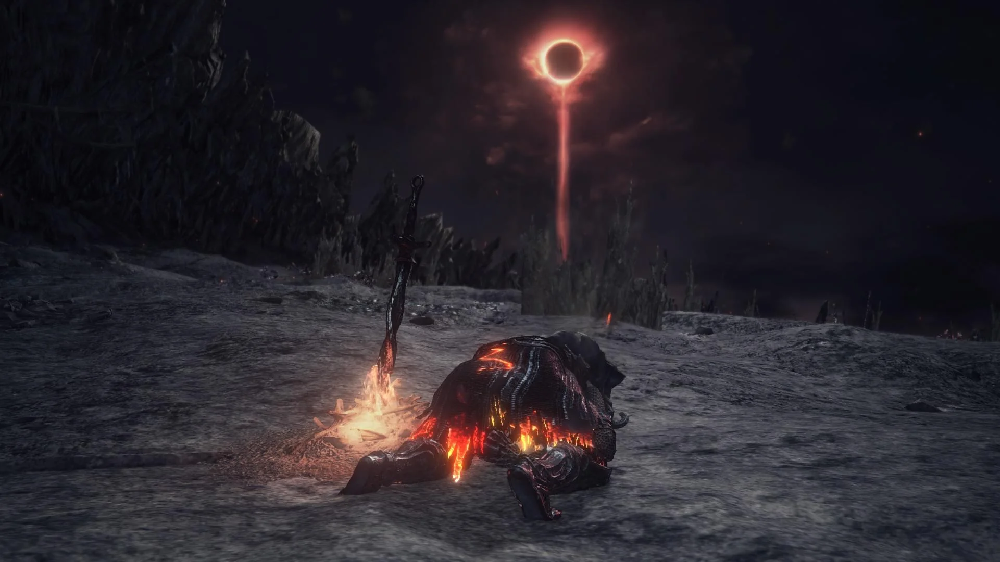

A Era do Fogo

No mundo de Dark Souls, o equilíbrio entre luz e escuridão é sustentado pela Primeira Chama — uma força mística que separou a Idade Antiga e trouxe a Era do Fogo. Foi graças a ela que surgiram os deuses, como Gwyn, e criaturas poderosas que moldaram o destino do mundo.
No entanto, como toda a chama, também esta começa a extinguir-se. Quando a luz enfraquece, surge a ameaça da Era das Trevas — uma era dominada pela humanidade e pela escuridão.
O Dever dos Lordes
Para impedir que a chama se apague, vários Lordes sacrificaram-se ao longo dos séculos, ligando os seus corpos à fogueira para prolongar a Era do Fogo. Gwyn foi o primeiro e estabeleceu o ciclo que se repete eternamente.
Mas no tempo em que Dark Souls III decorre, os Lordes das Cinzas recusam-se a assumir o seu papel. Eles fogem dos seus tronos e abandonam o mundo ao colapso.
- Abyss Watchers – guerreiros corrompidos pelo Abismo.
- Yhorm, o Gigante – um rei que governou com sacrifício.
- Aldrich, o Devorador de Deuses – consumido por uma fome insaciável.
- Lothric, o Príncipe – o escolhido para ligar a chama, mas que rejeita o destino.

O Ashen One

Tu és o Ashen One — um ser reanimado, alguém que fracassou no passado e foi trazido de volta para cumprir uma missão que muitos recusam: restaurar o ciclo ou destruí-lo de vez.
A tua jornada leva-te a enfrentar os Lordes das Cinzas, recuperar as suas cinzas e devolvê-las aos tronos vazios no Santuário do Elo do Fogo.
O Fim do Ciclo

O destino do mundo está nas tuas mãos. No culminar da jornada, cabe-te decidir se irás:
- Ligar a chama e prolongar a Era do Fogo mais uma vez.
- Deixar a chama apagar e abraçar a Era das Trevas.
- Usurpar a chama e tornar-te o Senhor da Escuridão.
Em Dark Souls III, não existe um verdadeiro “bem” ou “mal”. Há apenas ciclos, sacrifícios e a inevitável decadência. Como Ashen One, és a última esperança — ou a sentença final — do mundo.